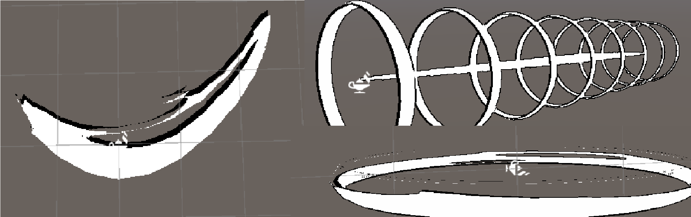

Visual Effects
Summary
For this project I've utilised both Unity's particle system and VFX graph as I often find particles easier to prototype with and VFX graphs better for managing complicated effects. An issue I often came across was reusing VFX, lots of actors shared them and having to set up individual instances for each felt ineffective.
To solve this I designed a system where various VFX and particles can be requested to play with varying parameters from a manager singleton. The first important duty of this manager is VFX pooling, to reuse instances where possible. This is handled rather simply where the library of available effects (a prefab tied to an enum value) are assigned in the manager, then whilst running, if an effect is requested it will then be instanced if none are available, but if one is available it will reuse it instead. The largest hurdle for this is determining when a VFX graph is finished playing, as this data isn't readily available on the CPU, my solution was to set a duration inside the library which will set a timer for each pooled effect when they play, then the manager can read that timer and determine whether the effect is free or not.
Effect Requests
Effect requests are a struct which can be passed when requesting a visual effect to be played, they contain many parameters such as:
- World or Local position
- A parent gameobject for the visual effect
- Colour, speed, size, etc of the visual effect
Visual Effect Creation
Most visual effects either use particle systems of visual effect graphs but in actuality they can be anything attached to a gameobject prefab. An example is the basic slash VFX which creates 3 simple meshes to form a "sandwich", where the outer layers are the requested colour and the inside is black to form an outline. To make the slash appear a shader is used made in Unity's shadergraph. This shader simply scrolls a voronoi noise based over time and uses alpha clipping to create the holes in the slash. The UVs of the slash mesh are aligned specifically for the effect by aligning the mesh quads.